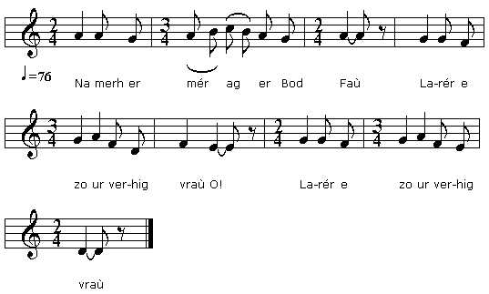
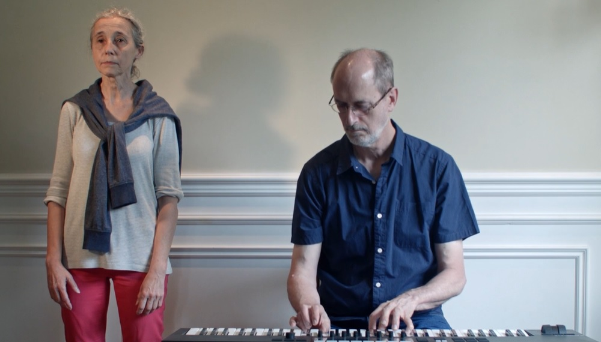

Er miloérieu argant
Les miroirs d'argent
The silver mirrors
Chant recueilli par Loeiz Herrieu et Maurice Duhamel
Auprès de Paterne Kermabon, du Cosquer, en Lann-er-Stêr
Publié dans "Guerzenneu ha soñnenneu Bro-Guened,
Chansons populaires du Pays de Vannes" en 1911

Mélodie
"Er miloérieu argant" de "Guerzenneu ha soñnenneu Bro-Guened"
Arrangement par Christian Souchon (c) 2015
Source: le site de M. Quentel (voir liens)
|
Er miloérieu argant 1. Na merh er mér ag er Bod Faù Larér e zo ur verhig vraù, O! Larér e zo ur verhig vraù. 2. "Ivér é d'ein mé bout ur vraù, Pe ne vein ket dimet ataù. 3. - Chiket, me merh, ne houilet ket, Aben er blé 'veet dimet. 4. - Me halon beur e lara d'ein Aben ur blé sur é varùein. 5. Mar marùan mé aben ur blé, Interret mé én doar neùé. 6. Interret mé én doar neùé, Lakeit pear boket ar mem bé. 7. " Lakeit pear boket ar mem bé; Deu a ré roz, unan loré. 8. " Deu a ré roz, unan loré, Hag un aral e'it karanté. 9. " El ma tei en troup a Huéned, Hé (ind) geméro beb a voket. 10. " Beb a voket e gemereint; Beb a chapelet e lareint, 11. "Eit inourein er verh iouank 'Ze marù er blé-men 'kreiz hé hoant, 12. 'Sellet dré ur miloér argant: Hé doé bet ean get hé galant. 13. "Hé doé bet ean get hé galant: E zorn e oé un olifant." Stumm all kanet gant Jean Le Roux, a Gaodan bet sonet gant Jean Le Roux ha Job Le Corre, a Vaod. (En Oriant d'en 13 e viz Est 1959). Mammenn: "Ar Soner", 1969, n° 179. 13. E-kreiz 'nehon oé boketet Get bokedeu ag ar véred. 14. Enroulet el ilieu bihan En-dro d'é troad oliant. |
Les miroirs d'argent 1. La fille du maire de Bod-Fao Est fort jolie. Peut-être trop. O! Est fort jolie. Peut-être trop. 2. - A quoi sert-il être jolie A celle que l'on ne marie? 3. - Ma fille, il ne faut pas pleurer: Dans un an je vous marierai. 4. - Je serai morte dans un an, Me dit mon coeur, assurément. 5. Quand cela sera, qu'on m' enterre Dans le tout nouveau cimetière, 6. Sur ma tombe on aura posé Pour l'orner, ces quatre bouquets. 7. Pour l'orner, ces quatre bouquets: Deux de roses et un de lauriers. 8. Deux de roses et un de lauriers. Un quatrième à volonté. 9. Que les soldats de Vannes puissent Choisir une fleur à leur guise. 10. Que chacun ayant son bouquet Puisse dire son chapelet 11. En l'honneur d'une jeune enfant Qui mourut du désir ardent, 12. De se voir au miroir d'argent Offert un jour par un galant. 13. Le beau miroir de cette histoire S'ornerait d'un manche d'ivoire. - Variante chantée par J. Le Roux de Caudan accompagné par J. Le Roux et Joseph Le Corre de Baud (Lorient, 13 août 1959). Source: "Ar Soner", 1969, n° 179. 13. Au milieu duquel se reflétaient des fleurs, Les fleurs du cimetière. 14. Enroulées, telles du lierre menu, Autour de son pied d'ivoire. Traduction: Christian Souchon (c) 2015 |
The silver mirrors 1. The Mayor of the town of Beechwood Had a daughter and she looked good, O! Had a daughter and she looked good. 2. - What's the use of being so pretty, As long as I do not marry? 3. - Daughter, in vain your tears are shed: Before a year you shall be wed. 4. - Before a year I shall be dead! So says my heart. Interred instead! 5. I shall be dead and interred Interred in the new churchyard. 6. Interred in the new churchyard. On my grave, four bunches of flowers. 7. On my grave will be four posies: Two of roses, one of bay-leaves. 8. Two of roses, one of bay-leaves. And the fourth will be as you please. 9. So that Vannes soldiers when they pass By my grave may pick from each glass, 10. From each glass may pick a posie And they will pray a rosary 11. For a young girl who died, so fair. Of her vain endeavours, this year: 12. She longed to look at a silver Mirror offered by a suitor. 13. At a mirror adorned sweetly With a handle of ivory. Variant sung by J. Le Roux of Caudan accompanied by J. Le Roux and Joseph Le Corre of Baud (Lorient, August 13, 1959). Source: "Ar Soner", 1969, n° 179. 13. In which were reflected flowers, The flowers of the cemetery. 14. Rolled up like tiny ivy garlands, Around its ivory foot. Translated by Christian Souchon (c) 2011 |

Interprétation par Claire Boucher accompagnée par Brad Hurley
NOTE:
| Il existe une autre chanson sur le même thème chez Guillerm (2 versions: Version 1 et Version 2), dans les manuscripts de Penguern (La mort du clerc, parmi les chants collectés par Fañch Danno (La fille de Pluzulian, et, bien sûr, dans le Barzhaz Breizh ("Les Miroirs d'argent"). | Other songs with the same topic are found in Guillerm's collection (2 versions: Version 1 and Version 2), in the Penguern MSs (The dead clerk, among the songs collected by Fañch Danno (The Pluzulian girl, as well as in the Barzhaz Breizh ("The silver mirrors"). |
des chants de "tombeaux indignes" étudiés dans CANNIBALES, TOMBEAUX ET PENDUS un essai au format LIVRE DE POCHE 
de Christian Souchon |
"indecorous grave songs" presented, in French, in CANNIBALES, TOMBEAUX ET PENDUS (Cannibals, graves and gallows) as a PAPERBACK BOOK
by Christian Souchon |
Cliquer sur le lien ou l'image - Click link or picture for more info